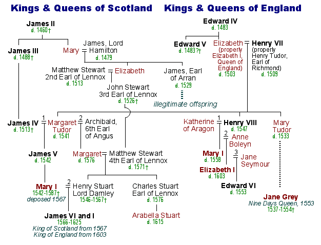
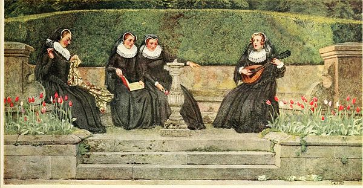
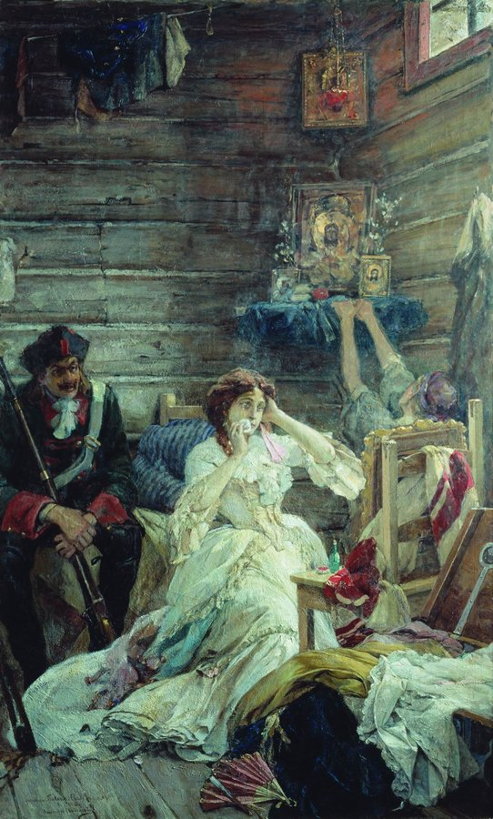
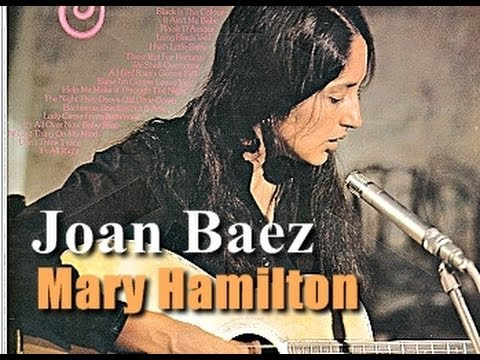

왜 예수님은 여자만 구해주셨을까? - Mary Hamilton 가사 해설
게시: 2021-04-01T00:59:15+09:00
최근 3세 여아 학대 사망 사건이 발생하여 많은 이들의 마음을 아프게 했습니다. 특히 아동 학대라는 사건의 본질에서 벗어나 대체 친모가 누구냐 등의 선정적인 기사를 써대는 언론 때문에 더욱 씁쓸했습니다. 그런데 대부분의 분들께서 주목하지 않으시는 점이 있습니다. 아이에게는 분명히 아빠가 있을텐데, 왜 아빠의 책임을 묻는 사람은 아무도 없느냐 하는 것입니다. 남성과 여성은 분명히 신체적 차이가 있고 그로 인해서 각자 불리한 점이 있습니다. 신체건강한 남성은 병역의 의무가 있습니다. 그에 비해, 여성에게 출산의 의무가 있는 것은 아닙니다만 아이를 낳는다면 분명히 그 신체적 정신적 시간적 사회적 심지어 어떤 경우엔 경제적인 것까지 대부분의 부담을 여성이 지게 됩니다. '요즘은 남자도 육아를 많이 돕거든요?' 라는 분들이 계실 것이고 그것이 사실입니다만, 정말 글자 그대로 돕는 수준인 경우가 대부분입니다. 특히 모유 수유로 아이를 키우면 더욱 그렇습니다. 자녀가 있으신 분들은 대부분 인정하실 것 같은데, 출산과 육아의 부담은 정말 큰 것입니다. 유복하고 단란한 가정을 꾸미는 남녀들에게는 별로 일어나지 않습니다만, 남녀간의 관계가 깨지거나 남자가 무책임한 경우엔 그 부담을 여자가 다 떠안게 됩니다. 미혼녀가 아이를 갖거나 불륜 관계로 아이가 생길 경우 아직까지 우리 사회에서는 여자 쪽만 손가락질을 하는 것을 많이 봅니다. 예수님도 돌에 맞아 죽을 위기에 처한 여인을 구해주신 적은 있지만 돌에 맞아 죽을 위기에 처한 남자를 구해주신 적은 없지요. 예수님이 남자보다 여자를 더 편애하셨기 때문이 아닙니다. 당시나 지금이나 남성은 책임을 지지 않고 여성만 손가락질을 받고 처벌받기 때문입니다. 이번 여아 학대 사망 사건도 마찬가지입니다. 이렇게 여성만 비난 받고 처벌 받는 일에 대한 노래도 있습니다. 양희은씨의 '아름다운 것들'의 원곡인 스코틀랜드 민요 'Mary Hamilton'입니다. 이 노래는 16세기 경 스코틀랜드의 여왕 메리 1세와, 그 시녀였던 4명의 메리 중 하나인 메리 해밀턴에 대한 내용입니다. 이 노래 속에서 메리 해밀턴은 메리 1세의 남편과 불륜 관계로 사생아를 낳는데, 그 아이를 쪽배에 태워 강에 떠내려 보내는 방식으로 살해했다가 그 죄로 교수형을 당하게 됩니다. 특히 마음이 아픈 부분은 메리 해밀턴이 처형될 때 찾아와 입에 발린 소리를 하는 스튜어드 왕에게 메리 해밀턴이 대꾸하는 부분입니다. 제가 뭐라고 따로 설명하기 보다는 아래 가사를 읽어보시는 것이 더 좋겠습니다.

(여기서 말하는 메리 1세는 족보의 왼쪽 하단에 붉은 색으로 표시된, 1542-1587 간 왕위에 있었던 Mary I입니다. 저 족보에 씌여 있듯이 메리 1세는 1567년에 폐위되어 사촌이자 한때 잉글랜드 왕위를 놓고 경쟁자였던 잉글랜드의 엘리자베스 1세에게 도망쳤으나, 자신의 왕위 정통성에 위협이 된다고 생각한 엘리자베스에 의해 유폐되었다가 결국 처형되었습니다.)
그러나 이 노래는 실제 역사와는 다른 내용을 담고 있습니다. 메리 1세에게 4명의 시녀가 있었고 다 메리라는 이름을 가졌다는 이야기는 있습니다만, 그런 불륜이 발생한 적도 없고 유아 살해는 더더욱 없었습니다. 또 실제 4명의 이름은 노래 속에서 나오는 2명과는 일치하지만 나머지 2명은 메리 카마이클과 메리 해밀턴이 아니라 메리 플레밍(Fleming)과 메리 리빙스턴(Livingston)입니다. 이 노래 속의 주인공은 오히려 러시아 역사에 실존했던 마리아 다닐로바 가멘토바(Maria Danilova Gamentova)라는 여인일 가능성이 높습니다. 마리아는 러시아 표트르 대제의 황비인 예카테리나 1세의 시녀였는데, 표트르 1세와 내연 관계를 맺고 있었습니다. 마리아는 표트르 말고도 다른 귀족과도 내연 관계였고 (누구의 아이인지는 모르겠으나) 낙태와 유아 살해를 저질렀습니다. 거기에 절도와 비방 등의 죄목까지 겹쳐서 결국 1719년에 처형되었는데, 노래 속 메리 해밀턴처럼 하얀 옷을 입고 효수되었다고 합니다. 아마도 그 이야기가 스코틀랜드의 메리 여왕 이야기에 녹아들어서 그런 노래가 만들어진 것이 아닌가 합니다.

(메리 1세의 시녀들 4명의 메리입니다.)

(처형을 기다리는 마리아 다닐로바입니다. 그녀는 흔히 하듯 도끼로 목이 잘린 것이 아니라 장검으로 목을 베였는데, 이는 집행인이 자기 몸에 손을 대지 않도록 해달라는 부탁을 표트르 1세가 들어주었기 때문이었습니다. 그렇다고 표트르 1세가 마리아에게 다정했던 것은 아니었습니다. 표르트는 잘린 마리아의 목을 손에 들고 인체 해부학에 대해 떠든 뒤, 그 입술에 키스하고는 그냥 던져버렸다고 합니다. 표트르가 내던진 마리아의 머리는 수십년 후인 예카테리나 대제 때까지도 러시아 왕립 학회에 보존되었다고 합니다.) 이번에도 역시 존 바에즈(Joan Baez)가 부른 버전으로 감상하시길 권합니다. 특히 아래 유튜브 링크에는 아름다운 스코틀랜드 풍광과 함께 영어 뿐만 아니라 한글로도 번역이 붙어 있네요. 저는 나름대로의 번역을 아래에 붙였습니다. 영어 노래가 다 그렇습니다만, 소절마다 끝부분의 운율이 hall-all-all, 그리고 me-thee, sea-me, brown-town 등으로 부드럽게 이어지는 것을 유심히 보시기 바랍니다. 가사 중에 dee라는 단어가 나옵니다. 저는 처음엔 스코틀랜드 방언인가 생각했는데 그건 아니고 원래 die를 써야 하는데 me-die는 운율이 맞지 않으므로 me-dee로 운율을 맞추기 위해 이렇게 고친 것이라고 합니다.


Mary Hamilton Word is to the kitchen gone And word is to the hall And word is up to madam the queen And that's the worst of all That Mary Hamilton's borne a babe To the highest Stuart of all 소문은 주방으로 번졌어요 거실로도 퍼졌지요 결국 여왕님 귀에도 들어갔지요 그게 최악이었어요 메리 해밀턴이 아이를 낳았다는 소문이었지요 스튜어트 가문 중 가장 고귀한 남자의 아이를요 Oh rise, arise Mary Hamilton Arise and tell to me What thou hast done with thy wee babe I saw and heard weep by thee 일어나거라 메리 해밀턴 일어나 내게 말하거라 너의 작은 아기에 무슨 짓을 했느냐 네 옆에서 아기가 우는 것을 보았느니라 I put him in a tiny boat And cast him out to sea That he might sink or he might swim But he'd never come back to me 아기를 조각배에 태워 바다로 보냈어요 가라앉았는지 헤엄을 쳤는지는 몰라도 제게 돌아오진 않았답니다 Oh rise, arise Mary Hamilton Arise and come with me There is a wedding in Glasgow town This night we'll go and see 일어나거라 메리 해밀턴 일어나 함께 가자꾸나 글래스고우에 결혼식이 있단다 오늘밤 가서 보자꾸나 She put not on her robes of black Nor her robes of brown But she put on her robes of white To ride into Glasgow town 그녀가 입은 옷은 검은색도 아니고 갈색도 아니었네 입은 옷은 하얀색 그걸 입고 글래스고우로 갔지 And as she rode into Glasgow town The city for to see The bailiff's wife and the provost's wife Cried alack and alas for thee 글래스고우에 들어갈 때 온 도시가 보았다네 집행관 부인도 시장 부인도 너를 위해 슬피 울었지 "Oh you need not weep for me", she cried "You need not weep for me For had I not slain my own wee babe This death I would not dee" "날 위해 울 필요 없어요" 그녀가 외쳤지 "날 위해 울지 말아요 내가 내 작은 아기를 해치지 않았다면 이런 죽음을 당하지도 않았을테니까요" Oh little did my mother think When first she cradled me The lands I was to travel in And the death I was to dee 내 어머니는 생각도 못했겠지 나를 요람에 처음 눕힐때 내가 이런 곳으로 끌려와 이런 죽임을 당할 줄은 Last night I washed the queen's feet Put the gold in her hair And the only reward I find for this The gallows to be my share 어젯밤 나는 여왕님의 발을 씻겨드리고 머리칼에 금장식도 꽂아드렸지 그에 대한 보답은 오직 하나 내 앞의 교수대라네 Cast off, cast off my gown, she cried But let my petticoat be And tie a napkin round my face The gallows, I would not see 벗겨요 내 가운은 벗겨버려요 그녀는 외쳤네 그러나 속치마는 내버려 둬요 그리고 내 얼굴에 손수건을 묶어줘요 교수대는 차마 보고 싶지 않으니까요 Then by them come the king himself Looked up with a pitiful eye Come down, come down Mary Hamilton Tonight you will dine with me 그리고는 왕께서 친히 오셨네 측은한 눈으로 올려다보셨지 내려오거라 메리 해밀턴 내려오거라 오늘 밤 나와 저녁을 함께 들자꾸나 Oh hold your tongue, my sovereign liege And let your folly be For if you'd a mind to save my life You'd never have shamed me here 아 닥치세요 전하 그냥 그렇게 바보처럼 사세요 당신에게 날 구해줄 마음이 있었다면 날 이런 치욕에 방치하진 않았겠지요 Last night there were four Marys Tonight there'll be but three It was Mary Beaton and Mary Seton And Mary Carmichael and me 어젯밤까진 네 명의 메리가 있었지만 오늘밤에는 세 명만 있을 거에요 메리 비튼, 메리 시튼 메리 카마이클과 저였지요 Source : mnheritagesongbook.net/the-songs/addition-song-with-recordings/mary-hamilton-the-four-maries/
www.thoughtco.com/mary-hamilton-facts-3529586
en.wikipedia.org/wiki/Mary_Hamilton_(lady_in_waiting)